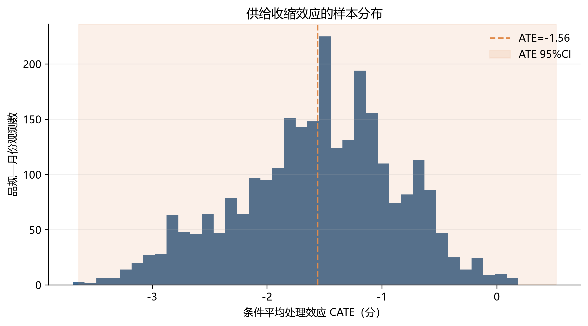
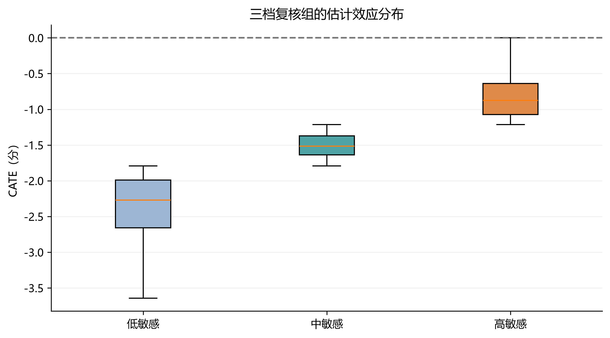
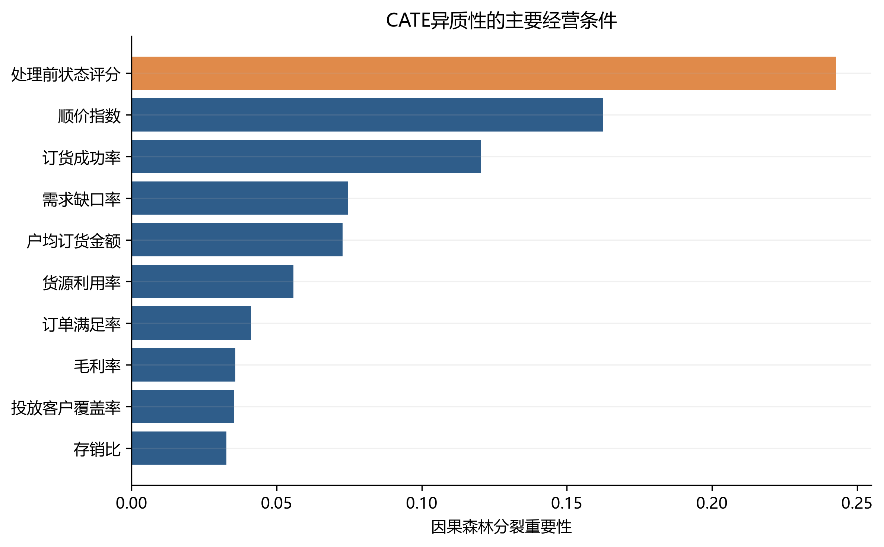
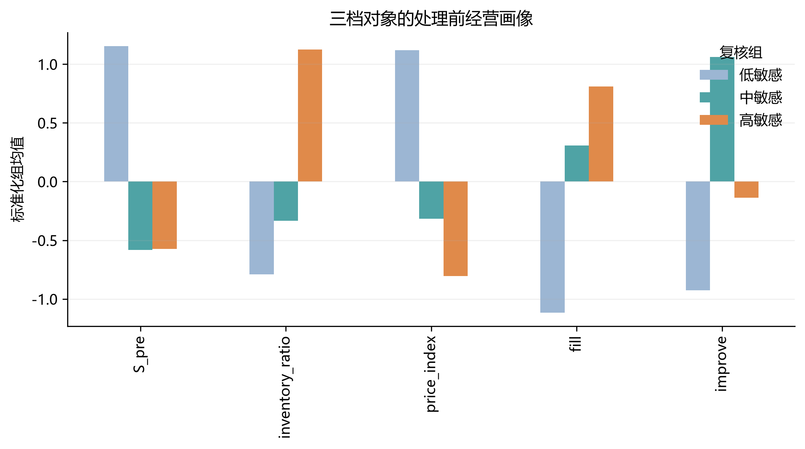
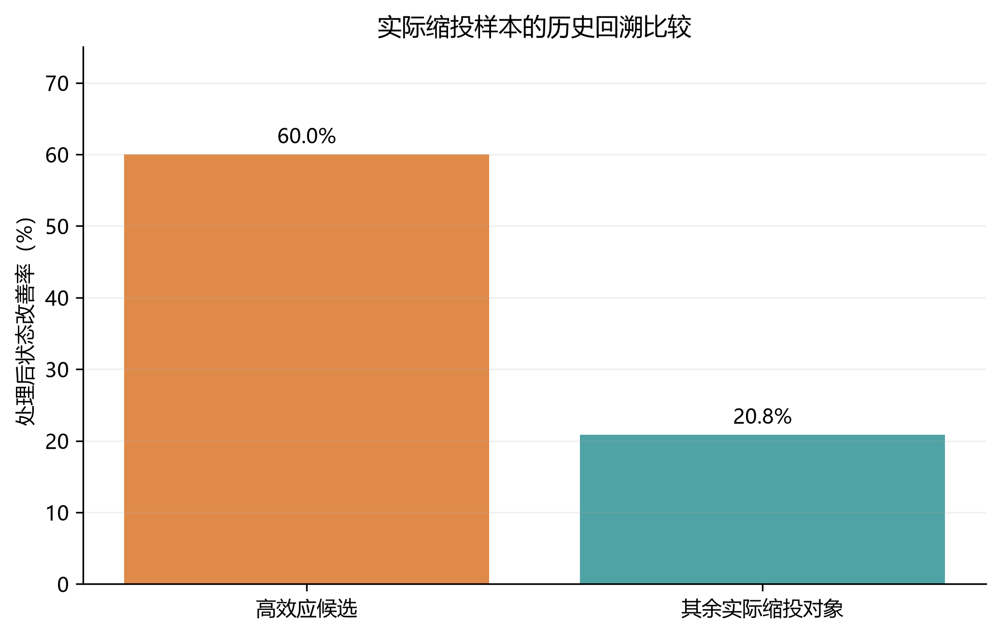
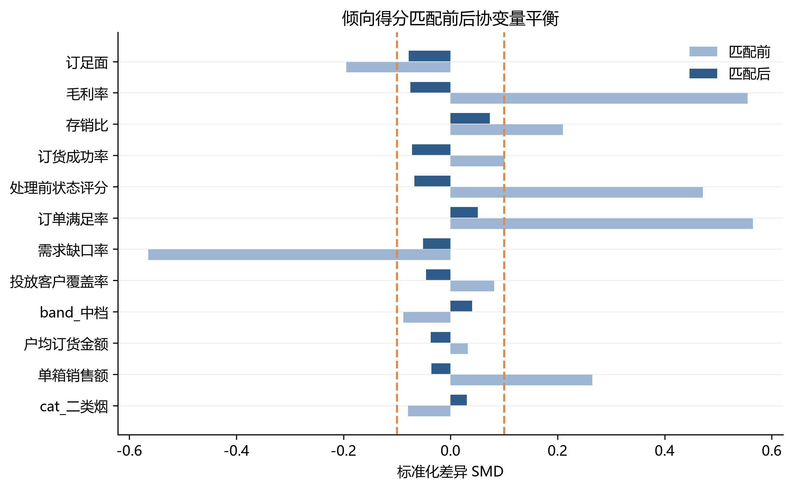
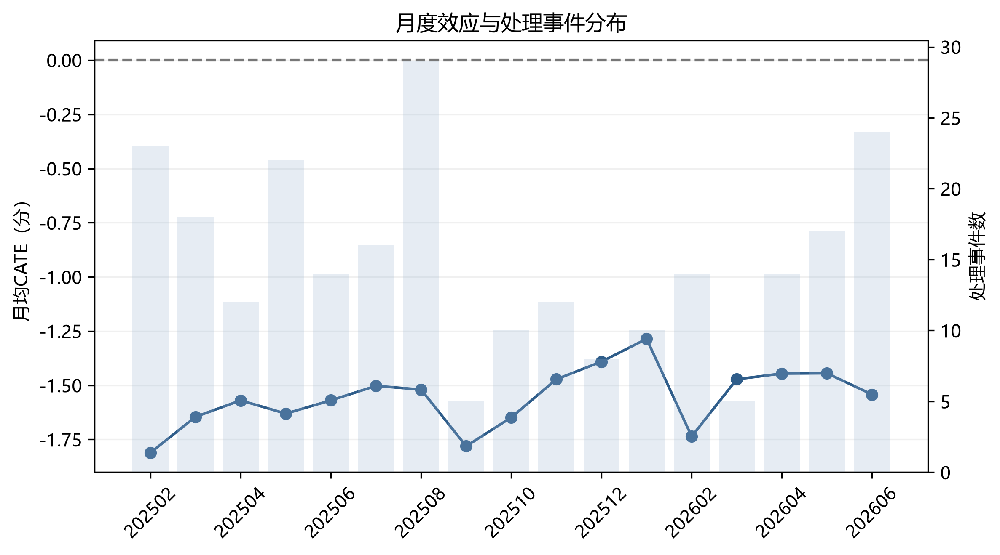

基于诚实因果森林的卷烟品规缩投效应评估与分层复核
Evaluation and tiered review of supply-contraction effects across cigarette specifications using an honest causal forest
摘 要：【目的】评价卷烟品规缩投对后续市场状态的异质性影响，为月度投放复核提供分品规证据。【方法】基于某市203个品规19个月的经营数据，构建23维处理前画像，以订单满足率低于当月35%分位且环比下降超过2个百分点定义缩投事件，采用按品规分组交叉拟合的诚实因果森林估计处理效应。【结果】（1）2687个品规—月份观测中有253个缩投事件；平均处理效应为-1.56分，95%CI为-3.64～0.52，未显示统一缩投可改善状态。（2）实际缩投样本中，相对高效应组历史改善率为60.0%，其余对象为20.8%，但处理前状态SMD为-0.813，不能作部署成效解释。（3）处理前状态、顺价指数和订货成功率是主要分层条件；匹配效应为-2.48分。【结论】现有数据不支持统一缩投。模型适合识别高风险对象并形成分层复核清单，调控动作仍需结合价格、库存和品牌策略确定。
关键词：卷烟品规；诚实因果森林；异质性处理效应；分层复核；精准投放
Abstract: [Objective] To evaluate heterogeneous effects of supply contraction and support monthly review. [Methods] An honest causal forest with product-grouped cross-fitting was applied to 2,687 observations from 203 specifications over 19 months using 23 pre-treatment covariates. [Results] (1) The average effect was -1.56 points (95% CI, -3.64 to 0.52), providing no evidence for uniform contraction. (2) Historical improvement was 60.0% in the relatively high-effect group and 20.8% in the remainder, but baseline imbalance precluded a causal interpretation. (3) Baseline status, price-order index and order success rate were the main partitioning conditions. [Conclusion] The model should support screening and review, while actions remain subject to price, inventory and brand-policy assessment.
Keywords: cigarette specification; honest causal forest; heterogeneous treatment effect; tiered review; precise allocation
0 引言
月度货源投放需要同时处理价格维护、库存消化、需求满足和品牌培育等目标。缩投是常用动作，但同一动作可能对不同品规产生不同结果。仅凭全品规平均指标或经验判断，既不能识别收益差异，也难以在次月复盘中区分调控效果与原有经营基础。
已有研究分别讨论市场状态评价、零售户画像、销量预测和精准投放优化，但状态评价回答“当前状态如何”，投放优化回答“投放量如何分配”，仍缺少对既定缩投动作的分品规效果评估。因果森林可估计条件平均处理效应，但只有在处理、结果和协变量均按时间顺序构造且实现与文字一致时，结果才可用于经营复核。
本文首先把处理当期指标与处理前画像分离，再以处理前至处理后一期的状态变化构造结果变量；随后采用按品规分组交叉拟合的诚实因果森林估计异质性效应，并用倾向得分匹配和历史回溯检查结论边界。研究重点不是证明缩投必然有效，而是判断现有证据是否足以支持统一缩投，以及模型可以在复核流程中承担何种角色。
1 数据与变量
1.1 数据来源与分析边界
研究使用某市2025年1月至2026年7月的品规月报。原始数据包括多指标销售汇总、多规格按日查询和品牌月进货情况查询，合并后覆盖203个品规。零售户档案、门店运营和扫码数据属于零售户层级，无法在缺少稳定品规—零售户月度连接键的情况下并入主模型，故仅用于确认数据边界，避免跨层级强行连接。
主键为品规编码与月份。清洗后主键重复数为0；构造前一期画像和后一期结果并对结果变量1%缩尾后，最终样本为2687个品规—月份观测，含253个缩投事件。
1.2 状态指标、处理与结果
状态评分由货源利用率、订单满足率、订足面、顺价指数、毛利率、单箱销售额、存销比和投放客户覆盖率8项指标构成。指标经2%和98%分位缩尾、方向统一及熵权—CRITIC等权组合后映射至0～100分。
缩投事件T在当月订单满足率不高于当月全部品规35%分位，且较上月下降超过2个百分点时取1。为避免处理定义与结果变量机械相关，结果Y定义为处理后一期状态评分与处理前一期状态评分之差；所有连续协变量均取处理前一期值。
1.3 23维处理前经营画像
| 变量 | 中文名称 | 时间口径 | 用途 |
|---|---|---|---|
| util_pre | 货源利用率 | t-1期经营指标 | X |
| fill_pre | 订单满足率 | t-1期经营指标 | X |
| full_surf_pre | 订足面 | t-1期经营指标 | X |
| ord_success_pre | 订货成功率 | t-1期经营指标 | X |
| price_index_pre | 顺价指数 | t-1期经营指标 | X |
| gross_margin_pre | 毛利率 | t-1期经营指标 | X |
| unitval_pre | 单箱销售额 | t-1期经营指标 | X |
| inventory_ratio_pre | 存销比 | t-1期经营指标 | X |
| channel_coverage_pre | 投放客户覆盖率 | t-1期经营指标 | X |
| demand_gap_pre | 需求缺口率 | t-1期经营指标 | X |
| amt_per_cust_pre | 户均订货金额 | t-1期经营指标 | X |
| new_cust_pre | 新进货户数 | t-1期经营指标 | X |
| S_pre | 处理前状态评分 | t-1期经营指标 | X |
| cat_一类烟 | 品类虚拟变量 | 处理前已知结构属性 | X |
| cat_二类烟 | 品类虚拟变量 | 处理前已知结构属性 | X |
| cat_三类烟 | 品类虚拟变量 | 处理前已知结构属性 | X |
| cat_四类烟 | 品类虚拟变量 | 处理前已知结构属性 | X |
| cat_五类烟 | 品类虚拟变量 | 处理前已知结构属性 | X |
| band_低档 | 价位段虚拟变量 | 处理前已知结构属性 | X |
| band_中低档 | 价位段虚拟变量 | 处理前已知结构属性 | X |
| band_中档 | 价位段虚拟变量 | 处理前已知结构属性 | X |
| band_中高档 | 价位段虚拟变量 | 处理前已知结构属性 | X |
| band_高档 | 价位段虚拟变量 | 处理前已知结构属性 | X |
2 研究方法

Fig. 1 Framework for effect evaluation and tiered review
2.1 诚实因果森林
设X为处理前经营画像，T为缩投事件，Y为处理前至处理后一期的状态变化，目标量为τ(x)=E[Y(1)-Y(0)|X=x]。结果模型与处理模型分别采用随机森林，并以品规为分组单元开展5折交叉拟合，同一品规的不同月份不跨训练折与验证折。
因果森林共600棵树，每棵树最多抽取45%的样本；诚实估计将抽样数据进一步分为分裂样本和叶节点效应估计样本，最小叶节点为20。正文不再使用伪结果除法，也不存在残差分母接近0时任意截断的问题。森林推断直接基于正交矩条件完成。
2.2 验证方法
验证包括三部分：检查处理组与对照组的倾向得分重叠及匹配前后协变量平衡；在实际缩投样本内部比较相对高效应候选与其余对象的历史状态变化；核对关键结论是否受基线差异影响。回溯比较仅用于业务可用性检查，不替代独立部署试验。
3 结果
3.1 缩投总体上是否改善市场状态

Fig. 2 Distribution of supply-contraction effects
平均处理效应为-1.560分，95%CI为-3.638～0.518，置信区间跨0。现有样本不能证明统一缩投会改善后续市场状态。倾向得分匹配效应为-2.478分，方向同样为负。业务上不应根据“平均有效”的预设对所有品规执行同方向调控。
3.2 模型能够区分哪些对象

Fig. 3 Estimated effects across three review tiers
| 复核组 | 样本量 | 平均CATE | 平均状态变化 | 历史改善率 | 处理前状态 |
|---|---|---|---|---|---|
| 高敏感 | 896 | -0.826 | -0.042 | 41.1% | 43.88 |
| 中敏感 | 895 | -1.509 | 0.659 | 44.8% | 43.85 |
| 低敏感 | 896 | -2.344 | -1.343 | 38.6% | 50.40 |
三档分组反映相对排序，不代表高档对象一定获得正向收益。相对高效应组的平均CATE仍为-0.826分，因此更准确的管理名称是“优先复核组”，而非“优先缩投组”。低效应对象应优先排除缩投，高效应对象仍须结合库存、价格和品牌策略人工审核。

Fig. 4 Main conditions partitioning heterogeneous effects
| 经营条件 | 重要性 |
|---|---|
| 处理前状态评分 | 0.2428 |
| 顺价指数 | 0.1625 |
| 订货成功率 | 0.1203 |
| 需求缺口率 | 0.0746 |
| 户均订货金额 | 0.0728 |
| 货源利用率 | 0.0558 |
| 订单满足率 | 0.0411 |
| 毛利率 | 0.0357 |
| 投放客户覆盖率 | 0.0353 |
| 存销比 | 0.0327 |
处理前状态评分、顺价指数和订货成功率是主要分层条件。重要性表示变量用于区分效应的程度，不能解释为单变量阈值或因果机制。
3.3 价位段和品类是否可以直接决定缩投
| 维度 | 分组 | 样本量 | 平均CATE |
|---|---|---|---|
| 价位段 | 中低档 | 17 | -2.743 |
| 价位段 | 中档 | 165 | -1.688 |
| 价位段 | 中高档 | 386 | -1.721 |
| 价位段 | 高档 | 2119 | -1.511 |
| 品类 | 一类烟 | 1504 | -1.571 |
| 品类 | 三类烟 | 499 | -1.708 |
| 品类 | 二类烟 | 599 | -1.372 |
| 品类 | 五类烟 | 17 | -2.743 |
| 品类 | 四类烟 | 68 | -1.575 |
各价位段和品类的平均CATE均为负，五类烟和中低档样本量仅17，不能据此给出独立调控规则。表中已补齐旧稿遗漏的中低档和五类烟，避免分组样本合计不完整。

Fig. 5 Pre-treatment profiles of the three review tiers
3.4 历史回溯能否证明业务效果

Fig. 6 Historical comparison among observed contraction events
| 对象 | 样本量 | 平均状态变化 | 历史改善率 |
|---|---|---|---|
| 相对高效应候选 | 85 | 0.990 | 60.0% |
| 其余实际缩投对象 | 168 | -7.654 | 20.8% |
相对高效应候选的历史改善率为60.0%，高于其余对象的20.8%。然而两组处理前状态SMD为-0.813，均值差异检验P<0.001，存在明显基线不平衡。因此，该比较只能说明排序与后续表现相关，不能写成“模型部署使改善率提高”，也不能与传统经验法作未经验证的准确率对比。
3.5 稳健性与数据限制

Fig. 7 Covariate balance before and after propensity-score matching
倾向得分匹配后，23项协变量平均绝对SMD由0.171降至0.032，总体平衡明显改善；匹配效应为-2.478分。该结果没有支持旧稿的正向平均效应。部分原始字段缺失率较高，新进货户数缺失率约59.6%，其缺失值采用样本中位数填补，结论仍受数据完整性限制。

Fig. 8 Monthly effects and contraction events
4 月度投放复核应用
4.1 三档清单
| 清单 | 进入条件 | 建议动作 | 禁止解释 |
|---|---|---|---|
| 优先复核 | CATE排序靠前，且价格、库存和品牌政策允许 | 人工核对后决定是否缩投及幅度 | 不得直接称为优先缩投 |
| 观察复核 | CATE居中或置信区间较宽 | 维持现状并补充经营信息 | 不得按固定比例缩投 |
| 暂缓缩投 | CATE排序靠后或经营风险不支持 | 转向库存消化、动销或覆盖修复 | 不得仅因销量下降继续缩投 |
4.2 嵌入流程
| 环节 | 输入 | 操作 | 输出 | 建议责任岗位 | 时间节点 |
|---|---|---|---|---|---|
| 数据准备 | 上月完整经营数据 | 更新品规—月份面板并执行质量检查 | 可估计样本 | 数据分析岗 | 每月3日前 |
| 模型预筛 | 23维处理前画像 | 生成CATE排序及置信区间 | 三档候选清单 | 数据分析岗 | 每月5日前 |
| 业务复核 | 候选清单、价盘、库存、品牌策略 | 逐项审核并记录调整理由 | 最终动作与幅度 | 投放复核岗 | 每月8日前 |
| 效果反馈 | 次月状态、订单和库存 | 比较推荐、执行与实际变化 | 复盘记录和样本更新 | 数据与业务联合复核 | 次月10日前 |
现有数据没有记录传统流程耗时，因此本文不虚构“从若干天缩短到若干小时”。流程改进体现为先由模型缩小复核范围，再由业务人员审查，而不是宣称已经实现经实测的效率提升。
4.3 幅度确定边界
现有数据只有二元缩投事件，缺少真实缩投幅度，不能从模型推导5%～12%等具体建议。缩投幅度须由总量约束、库存风险和品牌政策另行确定。本文模型只回答对象的相对复核优先级。
5 讨论
严格重跑改变了论文的核心判断。旧稿将处理当期订单满足率同时用于处理定义、协变量和状态变化基准，并以LightGBM伪结果模型称作诚实因果森林，产生了实现与叙述不一致及机械回归均值风险。修正时间顺序和模型实现后，7.647分的正向平均效应不能复现。
新结果仍有业务价值。模型可将全量品规压缩为不同复核优先级，并明确哪些对象应首先排除自动缩投。相对排序与历史改善表现存在差异，但基线不平衡说明模型尚不能替代业务审批。最稳妥的部署方式是把清单作为复核入口，并持续记录推荐、执行幅度、审批理由和后续结果。
研究的主要限制包括单一区域、19个月观察期、缩投事件由订单满足率代理、部分字段缺失率较高，以及缺少真实调控幅度和独立试运行结果。后续应优先补充投放决策日志与执行幅度，在留出时间窗或其他区域开展前瞻验证，再评价模型是否提升选品准确率和复核效率。
6 结论
（1）对象识别环节不宜采用统一缩投规则。平均效应为-1.56分且置信区间跨0，月度复核应先排除低效应和高风险对象。
（2）模型输出应改称三档复核清单。相对高效应对象进入人工复核，不直接触发缩投；低效应对象原则上暂缓缩投。
（3）复核人员应重点核对处理前状态、顺价指数、订货成功率、库存和品牌策略。变量重要性不能单独转化为充分决策阈值。
（4）现有二元处理数据不能支持具体缩投幅度。幅度须在补充实际执行量和总量约束后另行估计。
（5）效果评估必须比较推荐、实际执行与次月表现，并同时报告基线平衡。当前历史改善率差异不能替代独立部署验证。
参考文献
[1] 黄敏, 梁艳, 向云海, 等. 基于智能集成与阈值训练的卷烟市场状态评价体系研究——以南充市为例[J]. 中国烟草学报, 2025, 31(5):155-166.
[2] 姜思明, 刘荣, 谭升达, 等. 基于零售终端数据治理的卷烟市场状态监测研究[J/OL]. 烟草科技, 2026.
[3] 谭琛, 等. 基于高维精准画像与深度学习的卷烟零售户动态分档研究[J].
[4] 金文蔚, 虞华东, 沈振凯, 等. 数据驱动的卷烟品规精准投放策略研究[J]. 中国烟草学报, 2025, 31(6):152-160.
[5] 梁雪霞, 陈志, 邓超, 等. 基于大数据标签的卷烟新品选点投放模型研究与应用[J]. 中国烟草学报, 2025, 31(3):142-147.
[6] 王建飞, 等. 基于“规模-份额”的中式卷烟产品生命周期理论研究[J].
[7] WAGER S, ATHEY S. Estimation and inference of heterogeneous treatment effects using random forests[J]. JASA, 2018, 113(523):1228-1242.
[8] ATHEY S, TIBSHIRANI J, WAGER S. Generalized random forests[J]. Annals of Statistics, 2019, 47(2):1148-1178.
[9] NIE X, WAGER S. Quasi-oracle estimation of heterogeneous treatment effects[J]. Biometrika, 2021, 108(2):299-319.
[10] CHERNOZHUKOV V, et al. Double/debiased machine learning for treatment and structural parameters[J]. Econometrics Journal, 2018, 21(1):C1-C68.
[11] ROSENBAUM P R, RUBIN D B. The central role of the propensity score in observational studies for causal effects[J]. Biometrika, 1983, 70(1):41-55.